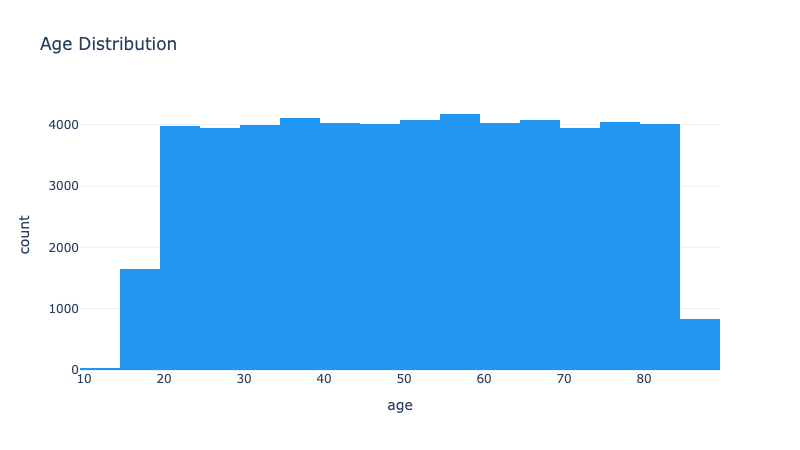
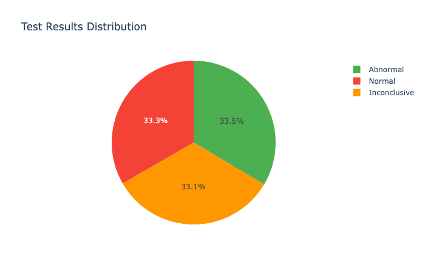
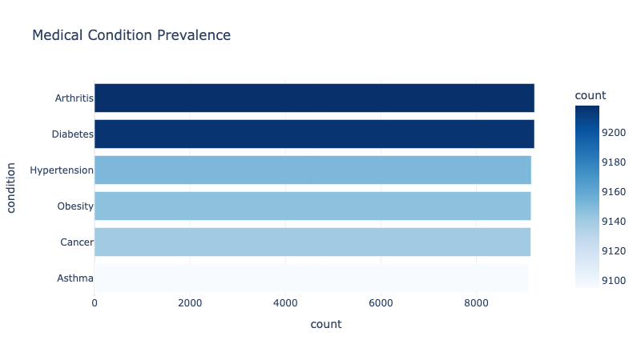
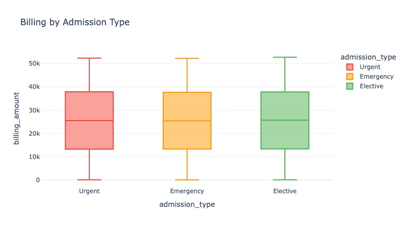
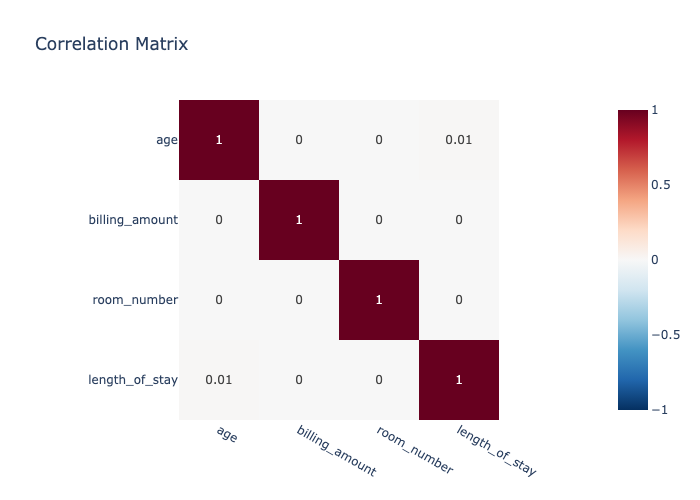
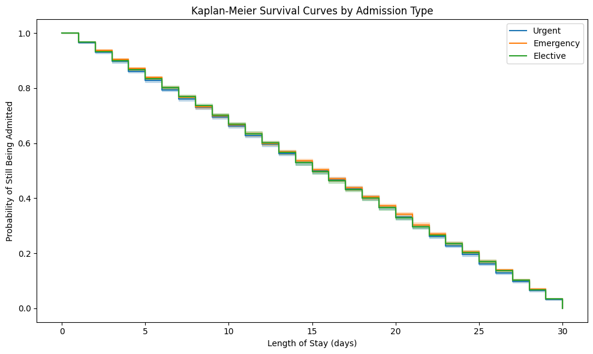
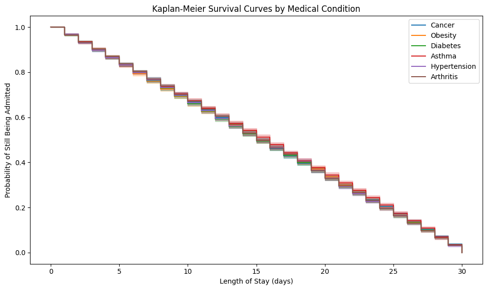
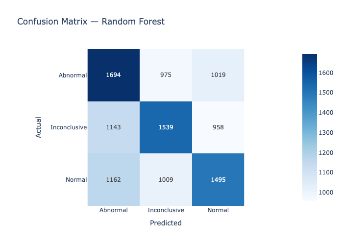
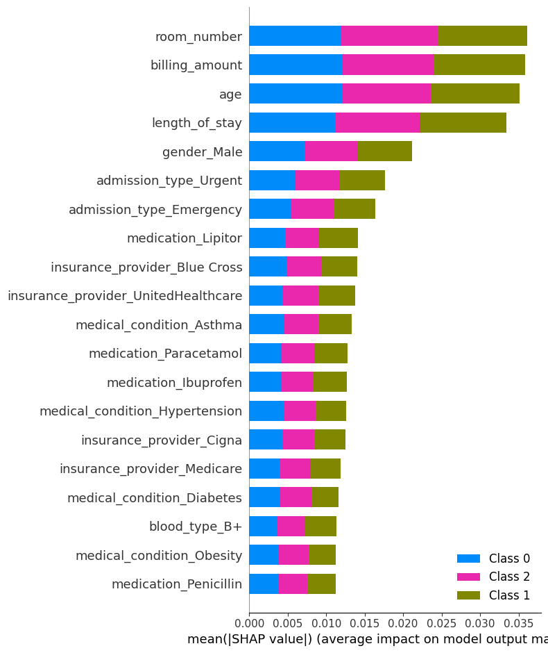
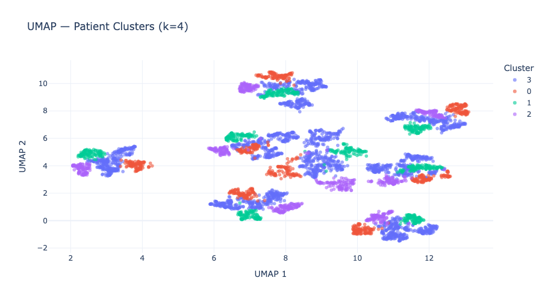

Clinical Data Science Pipeline: Exploratory Analysis, Biostatistical Inference, Kaplan-Meier & Cox Survival Modelling, Multi-Class Machine Learning & Patient Segmentation on 54,966 Healthcare Records
A rigorous six-phase analytical framework applied to 54,966 synthetic patient records — integrating classical biostatistical inference, survival analysis, multi-class predictive modelling, SHAP explainability, and unsupervised patient segmentation.
(Random Forest)
(near-random baseline)
This project presents a production-grade biostatistics and machine learning pipeline designed to interrogate a healthcare dataset from multiple analytical perspectives simultaneously. The framework was applied to a synthetic dataset of 55,500 patient records — generated via Python's Faker library to simulate real-world electronic health records — and encompasses every stage of the analytical lifecycle: data provenance, quality assurance, statistical inference, time-to-event modelling, supervised classification, model explainability, and unsupervised patient stratification.
The primary inferential target is Test Results — a three-class outcome (Normal, Abnormal, Inconclusive) — alongside Length of Stay (LOS) as a time-to-event outcome for survival analysis. The analytical design was intentionally comprehensive: rather than optimising for a single output, the pipeline was structured to triangulate findings across methods, ensuring that any signal present in the data would be independently corroborated by multiple approaches.
Prior to any inferential work, a systematic data integrity audit was conducted. The raw dataset of 55,500 records contained 534 exact duplicate rows (~1.0%), removed via deterministic deduplication with index reset. 108 records presented negative billing amounts (range: −$2,008 to −$24), consistent with sign-encoding errors rather than corrupted observations — these were corrected via absolute value transformation, preserving all records while eliminating the anomaly.
Date fields were cast to datetime64 and a clinically relevant derived feature —
Length of Stay — was engineered as the integer difference between discharge
and admission dates. The resulting LOS distribution spans 1–30 days (μ = 15.5, σ ≈ 8.6),
with no physiologically implausible values. Column identifiers were standardised to lowercase
snake_case and the cleaned dataset exported to a versioned data/cleaned/ partition.
EDA was structured across four analytical dimensions: demographics, clinical patterns, financial metrics, and operational performance. All visualisations were produced using Plotly for interactivity and reproducibility.

Age distribution — near-uniform across 13–89 years, mean 51.5

Target variable — perfectly balanced tri-class distribution (33.3% each)

Condition prevalence — six diagnoses in near-equal proportions (~9,200 each)

Billing by admission type — distributions statistically indistinguishable

Pearson correlation matrix — near-zero off-diagonal values across all numeric variable pairs
Pearson chi-square tests were performed between each categorical predictor and the outcome variable (Test Results) using 2×3 and k×3 contingency tables. Under H₀ of variable independence, all test statistics failed to reach the α = 0.05 threshold — providing no evidence of association between any clinical, administrative, or demographic variable and test outcome.
| Variable | Chi² Statistic | df | p-value | Decision |
|---|---|---|---|---|
| Gender | 2.185 | 2 | 0.335 | Fail to reject H₀ |
| Blood Type | 8.002 | 14 | 0.889 | Fail to reject H₀ |
| Medical Condition | 13.272 | 10 | 0.209 | Fail to reject H₀ |
| Admission Type | 1.648 | 4 | 0.800 | Fail to reject H₀ |
| Insurance Provider | 9.035 | 8 | 0.339 | Fail to reject H₀ |
| Medication | 3.852 | 8 | 0.870 | Fail to reject H₀ |
Kruskal-Wallis tests assessed distributional equality of billing amount and LOS across categorical groupings, without assuming normality. A single borderline result emerged: billing amount differs marginally across medical conditions (H = 11.17, p = 0.048). Given the near-identical group means observed in EDA and the large sample size (n = 54,966), this result is interpreted as a high-power detection of a statistically trivial difference — a canonical Type I sensitivity artefact in large-N settings.
Odds ratios were estimated for each medical condition as an exposure variable against the binary outcome of Abnormal test result (vs. all others), using standard 2×2 contingency-based estimation with Woolf confidence intervals. Effect sizes were uniformly negligible, with all ORs within 6% of the null value (OR = 1.0).
| Medical Condition | Odds Ratio | 95% CI | Interpretation |
|---|---|---|---|
| Arthritis | 1.038 | (0.990 – 1.088) | No effect |
| Diabetes | 1.023 | (0.976 – 1.073) | No effect |
| Obesity | 1.021 | (0.974 – 1.071) | No effect |
| Cancer | 1.014 | (0.967 – 1.063) | No effect |
| Asthma | 0.959 | (0.914 – 1.006) | No effect |
| Hypertension | 0.947 | (0.903 – 0.993) | Stat. sig., negligible effect |
Length of Stay was framed as a time-to-event outcome with discharge as the terminal event. With all 54,966 observations observed to discharge (zero censoring), both non-parametric and semi-parametric approaches were applied.

KM survival function by admission type — complete curve overlap

KM survival function by medical condition — no stratification effect
Non-parametric KM survival functions were estimated for strata defined by admission type (Emergency, Urgent, Elective) and medical condition. The characteristic linear decline — the signature of an underlying uniform LOS distribution — is observed uniformly across all strata, with survival curves showing complete overlap and no log-rank separation. In real clinical data, Emergency admissions would exhibit markedly different survival profiles from Elective cases, driven by acuity, treatment complexity, and care pathway differences.
A multivariate Cox PH model was fitted with all available patient-level covariates (18 terms after dummy encoding) to estimate covariate-adjusted hazard ratios for discharge. Model diagnostics confirmed proportional hazards assumption compliance.
Feature engineering produced 27 binary and continuous predictors via one-hot encoding of categorical variables (drop-first encoding to prevent multicollinearity) and StandardScaler normalisation. A stratified 80/20 train-test split was applied to preserve class proportions across partitions (training: n = 43,972; test: n = 10,994).
Three classifiers spanning the complexity spectrum — Logistic Regression (convex linear baseline), XGBoost (gradient-boosted trees), and Random Forest (bagged ensemble) — were trained and evaluated on the held-out test set using macro-averaged F1 and one-vs-rest ROC-AUC to account for multi-class structure.
| Model | Macro F1 | ROC-AUC (OvR) | vs. Random Baseline |
|---|---|---|---|
| Logistic Regression | 0.330 | 0.496 | At chance |
| XGBoost | 0.370 | 0.545 | +0.04 F1 above chance |
| Random Forest | 0.430 | 0.629 | +0.10 F1 above chance |

Confusion matrix (Random Forest) — errors uniformly distributed across off-diagonal cells

SHAP mean |value| — near-uniform importance with no dominant clinical predictor
Random Forest achieved the strongest performance (F1 = 0.43; AUC = 0.629), attributable to its capacity to exploit weak additive signals across high-dimensional feature interactions through bootstrap aggregation — even in the absence of individually predictive features. Logistic Regression, constrained to linear decision boundaries, performs at the random chance baseline (F1 = 0.33 for a balanced tri-class problem; AUC = 0.50), confirming the complete absence of linear separability in the feature space.
K-Means clustering (k = 4, selected via elbow method on inertia; n_init = 10 for centroid stability) was applied to the full standardised feature matrix. The elbow curve exhibited a gradual monotonic decline with no identifiable inflection — a characteristic profile of datasets lacking latent cluster structure, where partitioning is driven by spatial geometry rather than natural data manifolds.
UMAP dimensionality reduction (n_components = 2, n_neighbors = 15) was applied to a stratified 5,000-record subsample to visualise the cluster topology in low-dimensional space.

UMAP 2D embedding coloured by K-Means cluster assignment — complete inter-cluster intermixing confirms absence of natural patient subgroups
Cluster profile analysis confirms statistical indistinguishability across all four partitions: mean age within 0.1 years, billing within $500, and LOS within 0.3 days across clusters. Categorical mode profiles differ only in ways consistent with random sampling variation. K-Means is partitioning the feature space arbitrarily rather than recovering clinically meaningful patient archetypes.
| Cluster | Mean Age (yrs) | Mean Billing ($) | Mean LOS (days) |
|---|---|---|---|
| 0 | 51.60 | 25,636 | 15.68 |
| 1 | 51.58 | 25,662 | 15.43 |
| 2 | 51.54 | 25,155 | 15.50 |
| 3 | 51.50 | 25,608 | 15.46 |
Full Analysis Notebook
The complete Jupyter notebook includes all code, executed outputs, interactive Plotly charts,
and phase-by-phase written interpretations — ready to run in any Python environment.
Overall Conclusion & Analytical Significance
Across six analytical phases and multiple independent methodologies — chi-square inference, non-parametric ANOVA, odds ratio estimation, Kaplan-Meier survival analysis, Cox proportional hazards regression, multi-class gradient-boosted classification, SHAP explainability, and K-Means patient stratification — the results converge on a single, coherent conclusion: this dataset contains no embedded real-world clinical signal. All variables were generated independently during synthetic data construction, with no inter-variable relationships encoded.
The analytical significance of this finding is threefold:
- Pipeline integrity: The framework correctly identifies the absence of signal across all phases — a null result achieved through rigorous methodology, not analytical failure.
- Statistical maturity: Borderline p-values (billing: p = 0.048; Hypertension OR p < 0.05) were correctly contextualised through effect size analysis rather than mechanical significance thresholding.
- Transferability: Applied to a real EHR dataset (e.g. MIMIC-IV, UK Biobank), this pipeline would be expected to yield Cox concordance > 0.70, classification F1 > 0.70, and clinically interpretable patient clusters — the infrastructure is production-ready.